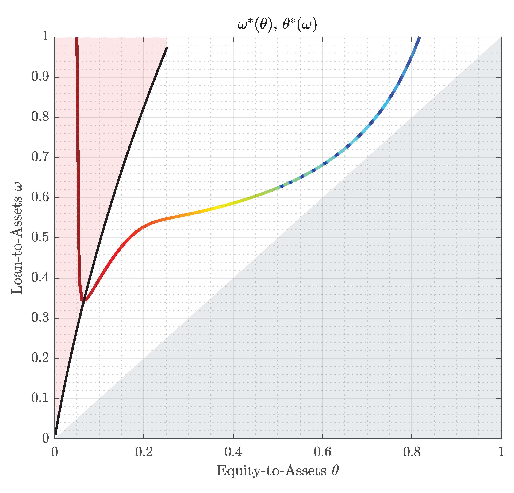
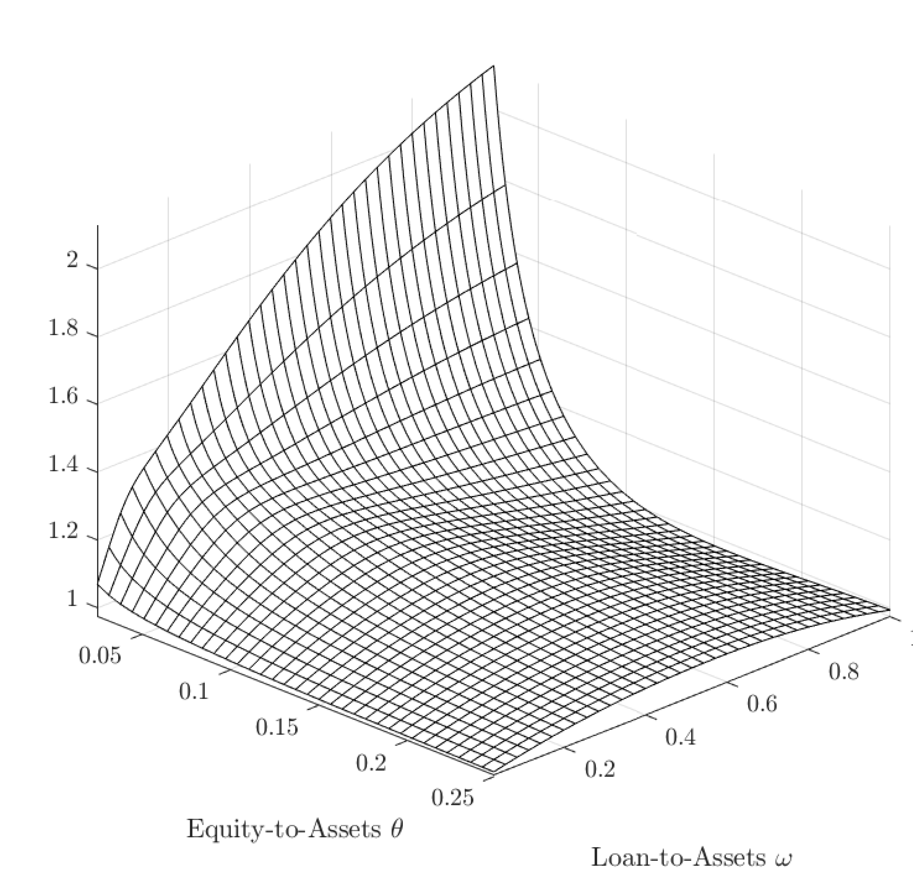

Session I: Trading Simulation: Bid-Ask Spread
(Symmetrically-infromed Traders)
This workshop is intended to familiarize students with optimal execution of bid-ask quotes. Key learning outcomes are:
Instruction
Optimal Execution
$$ \underbrace{ \left[\text{expected price} - \frac{\stackrel{\uparrow}{\text{spread}}}{2}\right]\times \stackrel{\downarrow}{\text{quantity-bought}}}_\text{ high margin but fewer transactions} + \underbrace{\left[\text{expected price} + \frac{\stackrel{\uparrow}{\text{spread}}}{2}\right]\times \stackrel{\downarrow}{\text{quantity-sold}}}_\text{ high margin but fewer transactions}$$
This workshop is intended to familiarize students with optimal execution of bid-ask quotes. Key learning outcomes are:
- Understand trade-off between posting a narrow spread against absorbing higher market demands in a competitive environment
- Understand informational give-away included in quotes posted by market participants
- Infer fundamental asset price to outbid the market
- Limit Order Book
- Session Information: h.ramian[at]imperial.ac.uk
- Skype hormozramian
Instruction
- The final asset price is given by the sum of 14 numbers – each of them between $1 and $3. $$\textrm{Asset Price}_0=\sum \textrm{Components}$$
- Each group will receive one of the numbers in their packs.
- Group members should use this number and the known minimum and maximum boundaries ($14 and $42 respectively, average $28) to form an idea about the fair value of the price. Based on these estimates, each group must provide executable prices to the buyside within a given time limit (fixed trade size: 10 units on each side, maximum bid/offer spread is $4).
- At the end of each round, buyside clients (facilitators) will execute the best bid and best ask quote (or any potential arbitrage opportunity) and notify the affected groups of the execution. Positions will be centrally monitored by the facilitators. After execution, all bid/ask quotes will be published anonymously and the game moves to the next round.
- At the beginning of each new round, two additional numbers will be revealed, and the market making teams can adjust their bid/ask quotes – considering newly obtained price information (new numbers, bid/ask quotes of competitors in previous round) and positioning. The facilitators also provide an exit for unwanted positions. Market makers must notify facilitators of their desire to exit at the beginning of the round and will have to cross the bid/offer spread. Execution prices will be best uncleared bid and ask prices of the previous round (i.e. the best prices at which no trading took place, only existing positions can be traded, there are no additional size restrictions.
Optimal Execution
$$ \underbrace{ \left[\text{expected price} - \frac{\stackrel{\uparrow}{\text{spread}}}{2}\right]\times \stackrel{\downarrow}{\text{quantity-bought}}}_\text{ high margin but fewer transactions} + \underbrace{\left[\text{expected price} + \frac{\stackrel{\uparrow}{\text{spread}}}{2}\right]\times \stackrel{\downarrow}{\text{quantity-sold}}}_\text{ high margin but fewer transactions}$$


Limit Order Book
The limit order book is the list of orders (prices at which you can transact) for a given security.
- Depending on the security, these orders may be on one exchange, or aggregated across many exchanges.
- This presentation will give a basic description of the order book, and how your transactions will be handled by (and how they will affect) the book.
- You will transact in an order book if you trade stock, futures, options, and/or other securities. However, in this presentation we’ll use stock examples.
Session II: Trading Simulation: Bid-Ask Spread
(Privately-infromed Traders)
Instruction
Optimal Execution
$$ \underbrace{\stackrel{\uparrow}{\text{quantity}}_1\times~\text{margin}_1}_\text{date-1}+ \underbrace{\stackrel{\downarrow}{\text{quantity}}_2\times~\text{margin}_2}_\text{date-2}$$
- Session Information: h.ramian[at]imperial.ac.uk
- Skype hormozramian
Instruction
- The final asset price is given by the sum of 14 numbers – each of them between $1 and $3. $$\textrm{Asset Price}_0=\sum_i^N \textrm{Value}_i$$
- Each group will receive one of the numbers in their packs.
- Group members should use this number and the known minimum and maximum boundaries ($14 and $42 respectively, average $28) to form an idea about the fair value of the price. Based on these estimates, each group must provide executable prices to the buyside within a given time limit (fixed trade size: 10 units on each side, maximum bid/offer spread is $4).
- At the end of each round, buyside clients (facilitators) will execute the best bid and best ask quote (or any potential arbitrage opportunity) and notify the affected groups of the execution. Positions will be centrally monitored by the facilitators. After execution, all bid/ask quotes will be published anonymously and the game moves to the next round.
- At the beginning of each new round, two additional numbers will be revealed, and the market making teams can adjust their bid/ask quotes – considering newly obtained price information (new numbers, bid/ask quotes of competitors in previous round) and positioning. The facilitators also provide an exit for unwanted positions. Market makers must notify facilitators of their desire to exit at the beginning of the round and will have to cross the bid/offer spread. Execution prices will be best uncleared bid and ask prices of the previous round (i.e. the best prices at which no trading took place, only existing positions can be traded, there are no additional size restrictions.
Optimal Execution
$$ \underbrace{\stackrel{\uparrow}{\text{quantity}}_1\times~\text{margin}_1}_\text{date-1}+ \underbrace{\stackrel{\downarrow}{\text{quantity}}_2\times~\text{margin}_2}_\text{date-2}$$